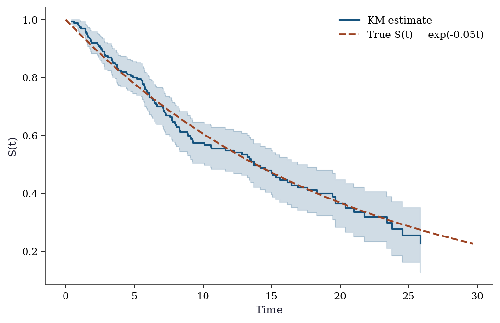
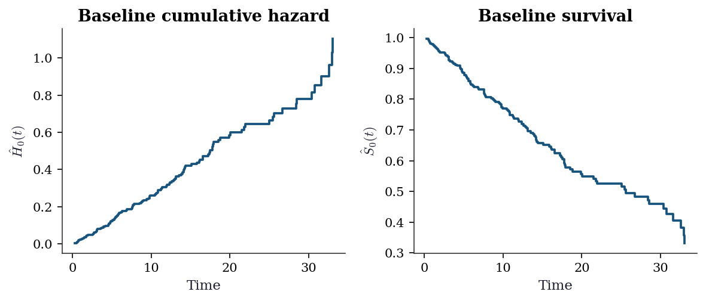
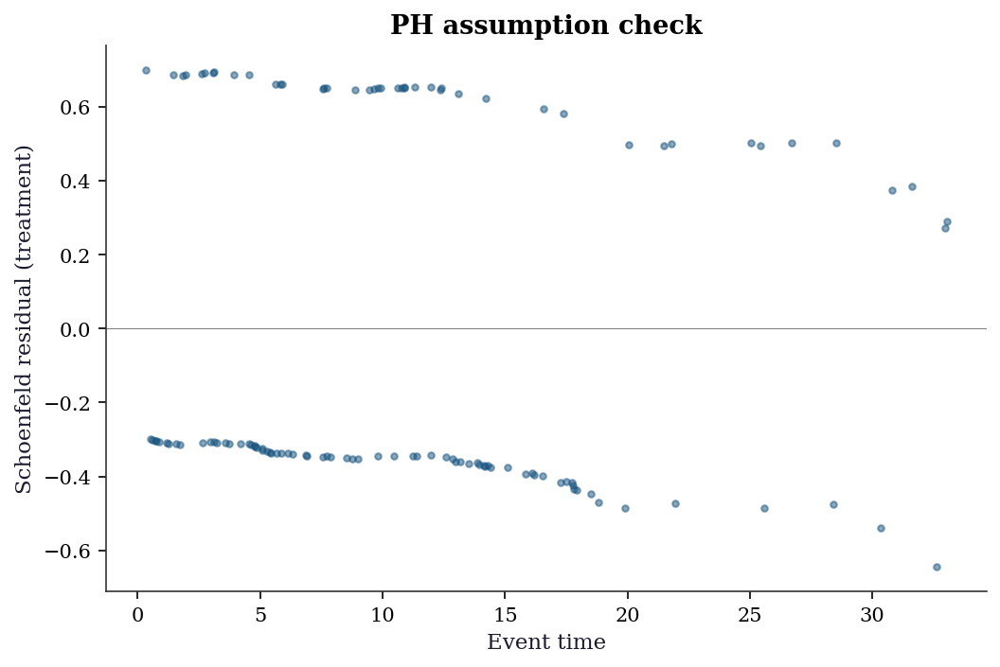
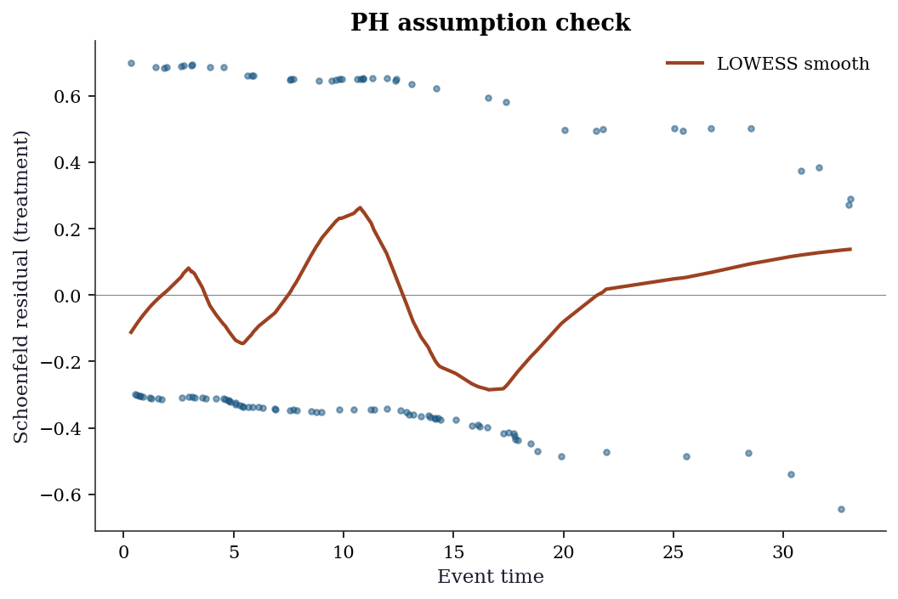
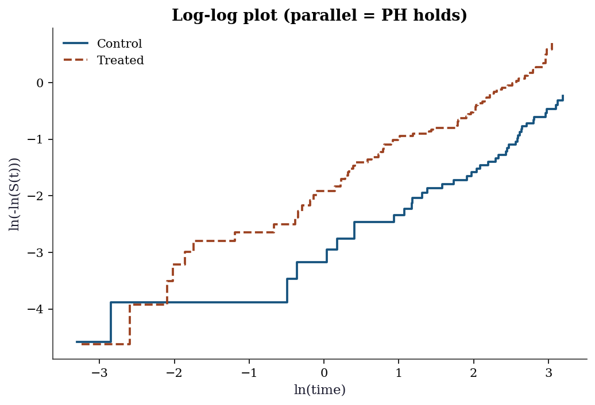
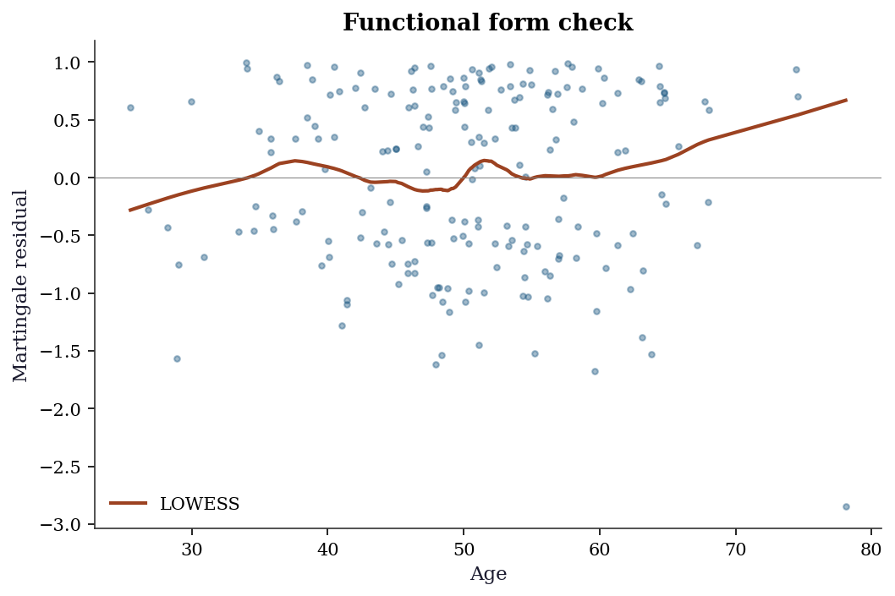
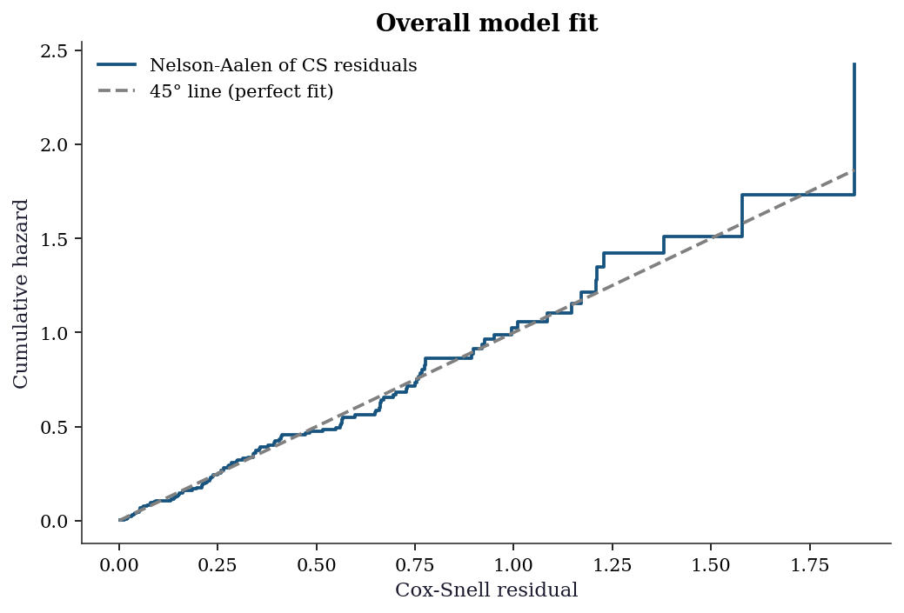
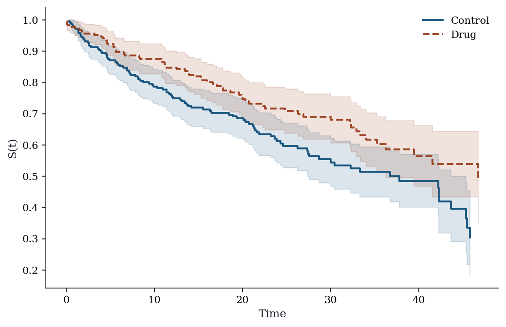
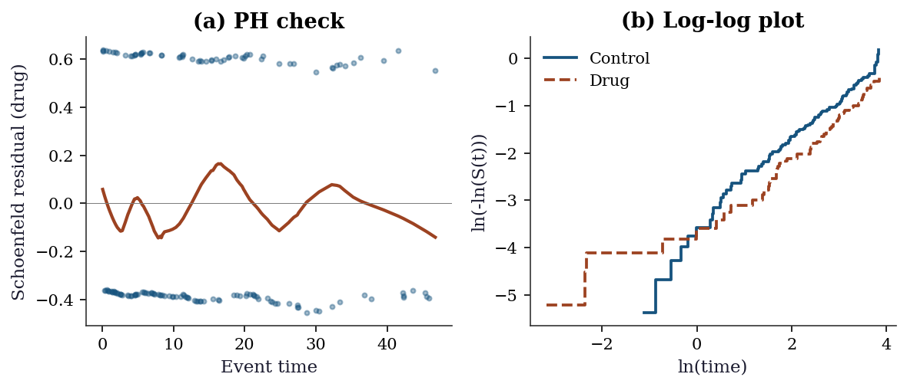

import numpy as np
import matplotlib.pyplot as plt
import pandas as pd
import statsmodels.api as sm
from statsmodels.duration.hazard_regression import PHReg
from statsmodels.duration.survfunc import SurvfuncRight, survdiff
from scipy import stats
plt.style.use('assets/book.mplstyle')
rng = np.random.default_rng(42)18 Survival Analysis
18.1 Notation for this chapter
| Symbol | Meaning | statsmodels |
|---|---|---|
| \(T_i\) | Event time | endog |
| \(C_i\) | Censoring time | |
| \(\delta_i = \mathbb{1}(T_i \leq C_i)\) | Event indicator | status |
| \(S(t) = \Pr(T > t)\) | Survival function | SurvfuncRight |
| \(h(t) = f(t)/S(t)\) | Hazard function | |
| \(H(t) = \int_0^t h(u)\,du\) | Cumulative hazard | |
| \(h(t \mid \mathbf{x}) = h_0(t)\exp(\mathbf{x}^\top\boldsymbol{\beta})\) | Cox model | PHReg |
19 Motivation
Survival analysis models time-to-event data: how long until a machine fails, a patient relapses, or a customer churns. The distinctive feature is censoring: some observations haven’t experienced the event yet when the study ends. You know they survived at least until time \(C_i\), but not how much longer.
Ignoring censoring (dropping censored observations or treating them as events) gives biased results. Survival methods handle censoring correctly through the likelihood, which contributes \(S(C_i)\) (not \(f(C_i)\)) for censored observations.
Statsmodels provides PHReg for Cox proportional hazards regression and SurvfuncRight for the Kaplan–Meier estimator. This chapter shows how to use them and what they compute.
20 Mathematical Foundation
20.1 Why censoring changes everything
In standard regression, you observe \((x_i, y_i)\) for every unit. In survival analysis, some outcomes are censored: you know the event hasn’t happened yet, but you don’t know when it will. For example, a patient is still alive when the study ends — you know they survived at least 5 years, but not how much longer.
Why you can’t just drop censored observations: Censored subjects tend to be the ones who survived longest. Dropping them biases the sample toward shorter survival times, making the treatment look worse than it is.
Why you can’t treat them as events: That would pretend that the patient died at the censoring time, when in fact they were still alive. This biases survival times downward.
The correct approach: The likelihood contributes differently for events and censored observations:
- For an event at time \(t_i\): the likelihood contribution is \(f(t_i)\) (the density — the probability of the event occurring at exactly this time).
- For a censored observation at time \(c_i\): the contribution is \(S(c_i)\) (the survival function — the probability of surviving at least until the censoring time).
This is the key: censored observations tell you “the event time was at least this long,” and the likelihood encodes this correctly.
20.2 Survival, hazard, and their relationship
Three functions characterize the time-to-event distribution:
\[ S(t) = \Pr(T > t), \qquad h(t) = \lim_{\Delta t \to 0}\frac{\Pr(t \leq T < t + \Delta t \mid T \geq t)}{\Delta t}, \qquad H(t) = \int_0^t h(u)\,du. \]
- Survival function \(S(t)\): The probability of surviving past time \(t\). Starts at \(S(0) = 1\) and decreases.
- Hazard function \(h(t)\): The instantaneous risk of the event at time \(t\), given you have survived until \(t\). This is NOT a probability (it can exceed 1). Think of it as a rate.
- Cumulative hazard \(H(t)\): The accumulated risk up to time \(t\).
They are related: \(S(t) = \exp(-H(t))\) and \(h(t) = -\frac{d}{dt}\ln S(t)\).
Why the hazard matters: It is the natural quantity for regression. The question “does the drug reduce mortality?” translates to “does the drug lower the hazard function?” The Cox model formalizes this.
20.3 Kaplan–Meier: nonparametric survival estimation
The Kaplan–Meier (KM) estimator is the nonparametric MLE of \(S(t)\). It works by computing the conditional probability of surviving past each event time, given you survived to that point:
\[ \hat{S}(t) = \prod_{t_j \leq t} \left(1 - \frac{d_j}{n_j}\right), \tag{20.1}\]
where \(t_j\) are the distinct event times, \(d_j\) is the number of events at \(t_j\), and \(n_j\) is the number at risk just before \(t_j\).
Why it is a product of conditional probabilities: The probability of surviving past time \(t\) can be decomposed: \(S(t) = \Pr(T > t_1) \cdot \Pr(T > t_2 \mid T > t_1) \cdots\) Each factor \((1 - d_j/n_j)\) estimates \(\Pr(T > t_j \mid T \geq t_j)\) — the conditional probability of surviving past \(t_j\) given you made it to \(t_j\).
How censoring enters: Censored subjects are included in the risk set \(n_j\) as long as they are still under observation. When they are censored (between event times), they leave the risk set. This is why KM handles censoring correctly: censored subjects contribute to the estimate for as long as they are observed, then drop out.
20.3.1 KM as the nonparametric MLE
The claim that KM is “the nonparametric MLE” deserves a proof sketch, because the construction reveals why the product formula appears.
The full likelihood for right-censored data is
\[ L = \prod_{i:\delta_i=1} f(t_i) \prod_{i:\delta_i=0} S(c_i). \]
We restrict to discrete distributions that place mass only at the observed event times \(t_1 < t_2 < \cdots < t_K\). Let \(p_j\) be the probability mass at \(t_j\), so that \(S(t) = 1 - \sum_{t_j \leq t} p_j\). The discrete hazard at \(t_j\) is \(\lambda_j = p_j / S(t_j^-)\), and the survival function factors as \(S(t_j^-) = \prod_{k < j}(1 - \lambda_k)\).
Substituting into the likelihood, each factor becomes a function of the \(\lambda_j\) alone. Setting \(\partial \ell / \partial \lambda_j = 0\) gives \(\hat{\lambda}_j = d_j / n_j\) — exactly the conditional event probability at \(t_j\). The MLE of the survival function is therefore
\[ \hat{S}(t) = \prod_{t_j \leq t}(1 - \hat{\lambda}_j) = \prod_{t_j \leq t}\left(1 - \frac{d_j}{n_j}\right), \]
which is the KM estimator (Equation eq-km). The product-of-conditionals structure is not a heuristic: it is the consequence of maximizing the nonparametric likelihood over discrete distributions supported on the event times.
20.3.2 Greenwood’s variance
Greenwood’s formula gives the variance of the KM estimator. The derivation uses the delta method on the log-survival function.
Since \(\hat{S}(t) = \prod_{j}(1 - \hat{\lambda}_j)\), the log is a sum: \(\log \hat{S}(t) = \sum_{t_j \leq t} \log(1 - d_j/n_j)\). Each term depends on an independent binomial draw (\(d_j\) events from \(n_j\) at risk), so
\[ \operatorname{Var}(\log \hat{S}(t)) \approx \sum_{t_j \leq t} \frac{d_j}{n_j(n_j - d_j)}, \]
where the approximation applies the delta method to \(\log(1 - d_j/n_j)\) with \(\operatorname{Var}(\hat{\lambda}_j) = \lambda_j(1-\lambda_j)/n_j\). Exponentiating back via the delta method:
\[ \widehat{\operatorname{Var}}(\hat{S}(t)) = \hat{S}(t)^2 \sum_{t_j \leq t} \frac{d_j}{n_j(n_j - d_j)}. \tag{20.2}\]
This is the formula SurvfuncRight uses to compute the confidence band around the KM curve.
20.4 Cox proportional hazards: the key idea
The Cox model separates the effect of covariates from the baseline hazard:
\[ h(t \mid \mathbf{x}) = h_0(t) \exp(\mathbf{x}^\top\boldsymbol{\beta}), \tag{20.3}\]
where \(h_0(t)\) is an unspecified baseline hazard (a completely free function of time).
What “proportional hazards” means: The ratio of hazards for two individuals with different covariates is constant over time: \[ \frac{h(t \mid \mathbf{x}_1)}{h(t \mid \mathbf{x}_2)} = \exp((\mathbf{x}_1 - \mathbf{x}_2)^\top\boldsymbol{\beta}). \]
This ratio does not depend on \(t\) — the “proportional” part. If the drug halves the hazard at one month, it halves it at every month. This is a strong assumption and should be checked (Schoenfeld residuals).
Why the partial likelihood works: The genius of Cox (1972) is that you can estimate \(\boldsymbol{\beta}\) without knowing \(h_0(t)\). Start from the full likelihood. For an event at \(t_i\) with covariates \(\mathbf{x}_i\), the density is \(f(t_i \mid \mathbf{x}_i) = h_0(t_i)\exp(\mathbf{x}_i^\top\boldsymbol{\beta}) \cdot S(t_i \mid \mathbf{x}_i)\). The survival factor depends on the cumulative baseline hazard \(H_0(t_i) = \int_0^{t_i} h_0(u)\,du\), which is an infinite-dimensional nuisance parameter.
Cox’s insight is to condition on two things: (1) the set of observed event times, and (2) the number of events at each time. Given that exactly one event occurs at time \(t_i\), the conditional probability that it is subject \(i\) (rather than any other subject in the risk set \(\mathcal{R}(t_i)\)) is
\[ \frac{h_0(t_i)\exp(\mathbf{x}_i^\top\boldsymbol{\beta})} {\sum_{j \in \mathcal{R}(t_i)} h_0(t_i) \exp(\mathbf{x}_j^\top\boldsymbol{\beta})} = \frac{\exp(\mathbf{x}_i^\top\boldsymbol{\beta})} {\sum_{j \in \mathcal{R}(t_i)} \exp(\mathbf{x}_j^\top\boldsymbol{\beta})}. \]
The baseline hazard \(h_0(t_i)\) factors out of both numerator and denominator and cancels. Multiplying these conditional probabilities over all event times gives the partial likelihood:
\[ \mathcal{L}_P(\boldsymbol{\beta}) = \prod_{i:\delta_i=1} \frac{\exp(\mathbf{x}_i^\top\boldsymbol{\beta})}{\sum_{j \in \mathcal{R}(t_i)} \exp(\mathbf{x}_j^\top\boldsymbol{\beta})}. \tag{20.4}\]
Each factor is a softmax: the probability that subject \(i\) (the one who actually died) had the highest hazard among everyone still at risk. This is why Cox regression is “semiparametric” — it isolates the \(\boldsymbol{\beta}\)-dependent part without specifying \(h_0(t)\).
The payoff: \(\hat{\boldsymbol{\beta}}\) is \(\sqrt{n}\)-consistent and asymptotically normal, with the same variance you would get from the full likelihood if \(h_0(t)\) were known. You lose nothing asymptotically by leaving \(h_0(t)\) unspecified — a remarkable result proved formally by Andersen and Gill (1982).
Interpreting the coefficients: \(\exp(\beta_j)\) is the hazard ratio. If \(\exp(\beta_j) = 0.5\), a one-unit increase in \(x_j\) halves the hazard (protective). If \(\exp(\beta_j) = 2\), it doubles the hazard (harmful).
20.5 The log-rank test as a score test
The log-rank test compares survival curves between two groups. Its connection to Cox regression is deeper than “they often agree” — the log-rank statistic is exactly the score test from a Cox model with a single binary covariate.
Let \(z_i \in \{0, 1\}\) be the group indicator. At each event time \(t_j\), let \(d_{1j}\) be the number of events in group 1 and \(n_{1j}\) the number at risk in group 1. The total events and total at risk at \(t_j\) are \(d_j\) and \(n_j\). Under the null \(\beta = 0\) (no group difference), the expected number of events in group 1 at time \(t_j\) is
\[ e_{1j} = \frac{n_{1j}\, d_j}{n_j}. \]
The log-rank statistic is
\[ U = \sum_j (d_{1j} - e_{1j}), \]
which is the total observed-minus-expected events in group 1. Now consider the Cox partial log-likelihood with covariate \(z_i\):
\[ \ell_P(\beta) = \sum_{i:\delta_i=1} \left[ z_i \beta - \log \sum_{j \in \mathcal{R}(t_i)} \exp(z_j \beta) \right]. \]
Taking the derivative and evaluating at \(\beta = 0\):
\[ \frac{\partial \ell_P}{\partial \beta}\bigg|_{\beta=0} = \sum_{i:\delta_i=1} \left(z_i - \frac{n_{1,t_i}}{n_{t_i}}\right) = \sum_j (d_{1j} - e_{1j}) = U. \]
This is the score function at the null. The score test statistic is \(U^2 / \operatorname{Var}(U)\), which gives the standard log-rank chi-squared statistic. The equivalence confirms that the log-rank test has optimal power against proportional-hazards alternatives — it is the locally most powerful rank test in that class.
20.6 Competing risks
When multiple event types are possible — death from cancer versus death from heart disease, or voluntary churn versus involuntary account closure — naive application of KM is biased.
The problem with naive KM: If you are interested in cancer death and treat heart-disease death as censoring, KM overestimates the cumulative incidence of cancer death. Censoring assumes the subject could still experience the event, but a subject who died of heart disease cannot later die of cancer.
Two frameworks handle this:
Cause-specific hazard. Model the hazard for cause \(k\) as
\[ h_k(t) = \lim_{\Delta t \to 0} \frac{\Pr(t \leq T < t+\Delta t,\; \text{cause}=k \mid T \geq t)} {\Delta t}. \]
Subjects who experience a competing event are censored at their event time. This is correct for the cause-specific hazard itself, but the resulting survival curve does not give the marginal probability of experiencing cause \(k\) by time \(t\), because it ignores the fact that competing events remove subjects from the risk pool permanently.
Fine–Gray subdistribution hazard. The Fine–Gray model defines a hazard on the subdistribution function \(F_k(t) = \Pr(T \leq t, \text{cause}=k)\):
\[ \tilde{h}_k(t) = \lim_{\Delta t \to 0} \frac{\Pr(t \leq T < t+\Delta t,\; \text{cause}=k \mid T \geq t \;\text{or}\; (T < t \;\text{and cause} \neq k))} {\Delta t}. \]
Subjects who experienced a competing event remain in the risk set (as “immortal” subjects). This is unintuitive, but it makes \(\exp(\beta)\) directly interpretable as a subdistribution hazard ratio whose cumulative incidence function has a one-to-one mapping. Use Fine–Gray when your goal is to estimate \(\Pr(\text{cause } k \text{ by time } t)\); use cause-specific hazards when you want to understand the biology or mechanism.
20.7 Nelson–Aalen cumulative hazard estimator
The Nelson–Aalen estimator targets the cumulative hazard \(H(t)\) directly, rather than the survival function:
\[ \hat{H}(t) = \sum_{t_j \leq t} \frac{d_j}{n_j}. \tag{20.5}\]
The KM and Nelson–Aalen estimators are related: \(\hat{S}_{\text{KM}}(t) = \prod(1 - d_j/n_j)\) while \(\hat{S}_{\text{NA}}(t) = \exp(-\hat{H}(t)) = \exp(-\sum d_j/n_j)\). For small \(d_j/n_j\) the two are nearly identical (since \(\log(1-x) \approx -x\)), but they can diverge when the risk set is small. The Nelson–Aalen estimator has the advantage that its variance is simpler: \(\widehat{\operatorname{Var}}(\hat{H}(t)) = \sum_{t_j \leq t} d_j / n_j^2\), and it connects naturally to the Breslow estimator of the baseline hazard after Cox regression.
21 The Algorithm
22 Statistical Properties
The partial likelihood MLE \(\hat{\boldsymbol{\beta}}\) is consistent and asymptotically normal under the proportional hazards assumption. The covariance is the inverse of the observed information from the partial likelihood. Wald, score, and LR tests (Chapter 10) apply directly.
The log-rank test for comparing two survival curves is equivalent to the score test from a Cox model with a single binary covariate.
23 Statsmodels Implementation
23.1 Kaplan–Meier
The Kaplan–Meier estimator is the nonparametric way to estimate the survival curve from data with censoring. It takes two inputs:
time: the observed time (either event time or censoring time, whichever came first)status: 1 if the event occurred, 0 if the observation was censored
Let’s simulate survival data and fit the KM estimator:
# Simulate survival data with censoring
n = 200
# True event times: exponential with rate 0.05 (mean = 20 time units)
true_rate = 0.05
event_time = rng.exponential(1/true_rate, n)
# Censoring times: uniformly distributed between 5 and 30
# (simulating a study that runs for 5-30 time units per subject)
censor_time = rng.uniform(5, 30, n)
# What we observe: the minimum of event time and censoring time
observed_time = np.minimum(event_time, censor_time)
# Event indicator: 1 if the event happened before censoring
event = (event_time <= censor_time).astype(int)
print(f"Events observed: {event.sum()} ({event.mean():.0%})")
print(f"Censored: {(1-event).sum()} ({(1-event).mean():.0%})")
# Fit Kaplan-Meier
# SurvfuncRight handles right-censored data (the most common type)
sf = SurvfuncRight(observed_time, event)Events observed: 113 (56%)
Censored: 87 (44%)fig, ax = plt.subplots()
ax.step(sf.surv_times, sf.surv_prob, where='post', color="C0",
linewidth=1.5, label="KM estimate")
# Confidence interval via Greenwood
se = np.sqrt(sf.surv_prob_se**2)
ax.fill_between(sf.surv_times,
np.maximum(sf.surv_prob - 1.96*se, 0),
np.minimum(sf.surv_prob + 1.96*se, 1),
step='post', alpha=0.2, color="C0")
# True survival
t_grid = np.linspace(0, max(observed_time), 200)
ax.plot(t_grid, np.exp(-true_rate*t_grid), '--', color="C1",
label=f"True S(t) = exp(-{true_rate}t)")
ax.set_xlabel("Time"); ax.set_ylabel("S(t)")
ax.legend()
plt.show()
23.2 Log-rank test
# Two groups with different hazard rates
group = rng.binomial(1, 0.5, n)
rate = np.where(group == 0, 0.03, 0.08)
t_event = rng.exponential(1/rate)
t_censor = rng.uniform(5, 30, n)
t_obs = np.minimum(t_event, t_censor)
d = (t_event <= t_censor).astype(int)
# Log-rank test
stat, pval = survdiff(t_obs, d, group)
print(f"Log-rank test: stat={stat:.3f}, p={pval:.4f}")Log-rank test: stat=27.245, p=0.000023.3 Cox regression (PHReg)
# Cox model with covariates
age = rng.normal(50, 10, n)
treatment = rng.binomial(1, 0.5, n)
X_cox = np.column_stack([age, treatment])
# Generate survival times with Cox structure
lp = 0.02*(age - 50) - 0.5*treatment
rate_cox = 0.05 * np.exp(lp)
t_event_cox = rng.exponential(1/rate_cox)
t_censor_cox = rng.uniform(10, 40, n)
t_obs_cox = np.minimum(t_event_cox, t_censor_cox)
d_cox = (t_event_cox <= t_censor_cox).astype(int)
# Fit Cox model
cox = PHReg(t_obs_cox, X_cox, status=d_cox).fit()
print(cox.summary().tables[1])
print(f"\nTrue beta: age=0.02, treatment=-0.5")
print(f"Estimated: age={cox.params[0]:.3f}, treatment={cox.params[1]:.3f}") log HR log HR SE HR t P>|t| [0.025 0.975]
x1 0.012132 0.009456 1.012206 1.282999 0.199492 0.993619 1.03114
x2 -0.730995 0.193781 0.481430 -3.772267 0.000162 0.329295 0.70385
True beta: age=0.02, treatment=-0.5
Estimated: age=0.012, treatment=-0.731Interpreting Cox coefficients: \(\exp(\hat\beta_j)\) is the hazard ratio. A negative \(\hat\beta\) means reduced hazard; \(\exp(\hat\beta) < 1\) means treatment is protective. The code above prints the estimated coefficients.
23.4 Handling tied event times: Breslow vs Efron
When multiple events share the same time, the partial likelihood is ambiguous: the ordering within a tie is unknown. Two approximations dominate:
Breslow’s method (the default in PHReg) treats ties as if they occurred sequentially in arbitrary order. The denominator stays the same for all tied events:
\[ \mathcal{L}_{\text{Breslow}} = \prod_j \frac{\prod_{i \in \mathcal{D}_j} \exp(\mathbf{x}_i^\top\boldsymbol{\beta})} {\left[\sum_{k \in \mathcal{R}(t_j)} \exp(\mathbf{x}_k^\top\boldsymbol{\beta})\right]^{d_j}}, \]
where \(\mathcal{D}_j\) is the set of subjects who die at \(t_j\). This is fast but biased when ties are heavy.
Efron’s method removes a fraction of the tied subjects from the risk set in each factor, yielding a better approximation:
\[ \mathcal{L}_{\text{Efron}} = \prod_j \prod_{r=1}^{d_j} \frac{1}{\sum_{k \in \mathcal{R}(t_j)} \exp(\mathbf{x}_k^\top\boldsymbol{\beta}) - \frac{r-1}{d_j}\sum_{i \in \mathcal{D}_j} \exp(\mathbf{x}_i^\top\boldsymbol{\beta})}. \]
Use PHReg(..., ties="efron") when ties are common (e.g., discrete time scales like months or years). With few ties, the two methods give nearly identical results.
# Compare Breslow (default) vs Efron
cox_breslow = PHReg(
t_obs_cox, X_cox, status=d_cox, ties="breslow"
).fit()
cox_efron = PHReg(
t_obs_cox, X_cox, status=d_cox, ties="efron"
).fit()
print("Breslow vs Efron comparison:")
for i, name in enumerate(["age", "treatment"]):
print(f" {name}: Breslow={cox_breslow.params[i]:.4f}"
f" Efron={cox_efron.params[i]:.4f}")Breslow vs Efron comparison:
age: Breslow=0.0121 Efron=0.0121
treatment: Breslow=-0.7310 Efron=-0.731023.5 Stratified Cox model
When the PH assumption fails for a categorical variable (say, sex), stratification is the standard fix. Each stratum \(s\) gets its own baseline hazard \(h_{0,s}(t)\), but all strata share the same \(\boldsymbol{\beta}\):
\[ h(t \mid \mathbf{x}, s) = h_{0,s}(t) \exp(\mathbf{x}^\top\boldsymbol{\beta}). \]
The partial likelihood becomes a product over strata. In PHReg, pass the stratification variable via the strata argument:
# Stratify by a binary variable (e.g., sex)
sex = rng.binomial(1, 0.5, n)
cox_strat = PHReg(
t_obs_cox, X_cox, status=d_cox, strata=sex
).fit()
print("Stratified Cox model (by sex):")
for i, name in enumerate(["age", "treatment"]):
print(f" {name}: coef={cox_strat.params[i]:.4f}"
f" SE={cox_strat.bse[i]:.4f}")
print(f"\nUnstratified: treatment={cox.params[1]:.4f}")
print(f"Stratified: treatment={cox_strat.params[1]:.4f}")Stratified Cox model (by sex):
age: coef=0.0116 SE=0.0095
treatment: coef=-0.7627 SE=0.1966
Unstratified: treatment=-0.7310
Stratified: treatment=-0.7627Each stratum has its own baseline hazard, so the PH assumption need not hold across strata — only within each stratum.
23.6 Baseline hazard estimation
After fitting the Cox model, you often want the baseline survival curve \(\hat{S}_0(t)\). The Breslow estimator gives the cumulative baseline hazard:
\[ \hat{H}_0(t) = \sum_{t_j \leq t} \frac{d_j}{\sum_{k \in \mathcal{R}(t_j)} \exp(\mathbf{x}_k^\top\hat{\boldsymbol{\beta}})}, \]
then \(\hat{S}_0(t) = \exp(-\hat{H}_0(t))\). This is the Nelson–Aalen estimator applied to the weighted risk set.
# Breslow baseline hazard estimate
event_mask = d_cox == 1
event_times_sorted = np.sort(t_obs_cox[event_mask])
lp_all = X_cox @ cox.params
cum_haz = np.zeros(len(event_times_sorted))
for idx, t in enumerate(event_times_sorted):
at_risk = t_obs_cox >= t
denom = np.sum(np.exp(lp_all[at_risk]))
cum_haz[idx] = (cum_haz[idx-1] if idx > 0 else 0) + 1.0/denom
baseline_surv = np.exp(-cum_haz)
fig, axes = plt.subplots(1, 2, figsize=(8, 3.5))
axes[0].step(event_times_sorted, cum_haz, where='post')
axes[0].set_xlabel("Time")
axes[0].set_ylabel(r"$\hat{H}_0(t)$")
axes[0].set_title("Baseline cumulative hazard")
axes[1].step(event_times_sorted, baseline_surv, where='post')
axes[1].set_xlabel("Time")
axes[1].set_ylabel(r"$\hat{S}_0(t)$")
axes[1].set_title("Baseline survival")
plt.tight_layout()
plt.show()
23.7 Diagnostics: Schoenfeld residuals
# Schoenfeld residuals test PH assumption
schoenfeld = cox.schoenfeld_residuals
fig, ax = plt.subplots()
ax.scatter(t_obs_cox[d_cox==1], schoenfeld[d_cox==1, 1], s=10, alpha=0.5)
ax.axhline(0, color="gray", linewidth=0.5)
ax.set_xlabel("Event time")
ax.set_ylabel("Schoenfeld residual (treatment)")
ax.set_title("PH assumption check")
plt.show()
24 From-Scratch Implementation
24.1 Kaplan–Meier from scratch
def kaplan_meier(times, events):
"""Kaplan-Meier survival function estimator."""
# Sort by time
order = np.argsort(times)
t_sorted = times[order]
e_sorted = events[order]
unique_times = np.unique(t_sorted[e_sorted == 1])
surv = np.ones(len(unique_times))
se = np.zeros(len(unique_times))
n_at_risk = len(times)
greenwood_sum = 0
for i, t in enumerate(unique_times):
# Number censored before this time
censored = np.sum((t_sorted < t) & (e_sorted == 0) &
(t_sorted >= (unique_times[i-1] if i > 0 else 0)))
n_at_risk -= censored
d = np.sum((t_sorted == t) & (e_sorted == 1))
surv[i] = surv[i-1] * (1 - d/n_at_risk) if i > 0 else (1 - d/n_at_risk)
greenwood_sum += d / (n_at_risk * (n_at_risk - d)) if n_at_risk > d else 0
se[i] = surv[i] * np.sqrt(greenwood_sum)
n_at_risk -= d
return unique_times, surv, se
t_km, s_km, se_km = kaplan_meier(observed_time, event)
print(f"KM at median time: S={s_km[len(s_km)//2]:.3f}")
print(f"statsmodels: S={sf.surv_prob[len(sf.surv_prob)//2]:.3f}")KM at median time: S=0.712
statsmodels: S=0.71224.2 Nelson–Aalen from scratch
def nelson_aalen(times, events):
"""Nelson-Aalen cumulative hazard estimator."""
order = np.argsort(times)
t_sorted = times[order]
e_sorted = events[order]
unique_times = np.unique(t_sorted[e_sorted == 1])
cum_haz = np.zeros(len(unique_times))
var_haz = np.zeros(len(unique_times))
n_at_risk = len(times)
for i, t in enumerate(unique_times):
# Remove censored before this time
if i > 0:
censored = np.sum(
(t_sorted < t) & (e_sorted == 0)
& (t_sorted >= unique_times[i-1])
)
else:
censored = np.sum(
(t_sorted < t) & (e_sorted == 0)
)
n_at_risk -= censored
d = np.sum((t_sorted == t) & (e_sorted == 1))
prev = cum_haz[i-1] if i > 0 else 0
prev_v = var_haz[i-1] if i > 0 else 0
cum_haz[i] = prev + d / n_at_risk
var_haz[i] = prev_v + d / n_at_risk**2
n_at_risk -= d
surv_na = np.exp(-cum_haz)
return unique_times, cum_haz, surv_na, var_haz
t_na, h_na, s_na, v_na = nelson_aalen(observed_time, event)
print(f"Nelson-Aalen S(median): {s_na[len(s_na)//2]:.3f}")
print(f"KM S(median): {s_km[len(s_km)//2]:.3f}")
print(f"Difference: {abs(s_na[len(s_na)//2] - s_km[len(s_km)//2]):.4f}")Nelson-Aalen S(median): 0.713
KM S(median): 0.712
Difference: 0.000724.3 Cox partial likelihood from scratch
The partial log-likelihood, its gradient, and its Hessian are all we need for Newton–Raphson optimization. For the Breslow approximation (no ties adjustment):
\[ \ell_P(\boldsymbol{\beta}) = \sum_{i:\delta_i=1} \left[\mathbf{x}_i^\top\boldsymbol{\beta} - \log \sum_{j \in \mathcal{R}(t_i)} \exp(\mathbf{x}_j^\top\boldsymbol{\beta})\right]. \]
The gradient is
\[ \frac{\partial \ell_P}{\partial \boldsymbol{\beta}} = \sum_{i:\delta_i=1} \left(\mathbf{x}_i - \frac{\sum_{j \in \mathcal{R}(t_i)} \mathbf{x}_j \exp(\mathbf{x}_j^\top\boldsymbol{\beta})} {\sum_{j \in \mathcal{R}(t_i)} \exp(\mathbf{x}_j^\top\boldsymbol{\beta})} \right) = \sum_{i:\delta_i=1} (\mathbf{x}_i - \bar{\mathbf{x}}_w(t_i)), \]
where \(\bar{\mathbf{x}}_w(t_i)\) is the weighted mean of covariates in the risk set, with weights \(\exp(\mathbf{x}_j^\top\boldsymbol{\beta})\). Each event contributes the residual: the actual covariate minus what we would expect under the model.
def cox_partial_loglik(beta, X, times, events):
"""Partial log-likelihood (Breslow)."""
n, p = X.shape
lp = X @ beta
order = np.argsort(-times) # descending
t_s = times[order]
e_s = events[order]
lp_s = lp[order]
loglik = 0.0
log_denom = -np.inf # log-sum-exp accumulator
for i in range(n):
# Add subject to risk set (cumulative logsumexp)
log_denom = np.logaddexp(log_denom, lp_s[i])
if e_s[i] == 1:
loglik += lp_s[i] - log_denom
return loglik
def cox_newton_raphson(X, times, events, max_iter=25,
tol=1e-9):
"""Fit Cox model via Newton-Raphson."""
n, p = X.shape
beta = np.zeros(p)
for iteration in range(max_iter):
lp = X @ beta
order = np.argsort(-times)
t_s = times[order]
e_s = events[order]
X_s = X[order]
elp_s = np.exp(lp[order])
# Accumulate risk-set sums (descending time)
grad = np.zeros(p)
hess = np.zeros((p, p))
s0 = 0.0 # sum of exp(lp)
s1 = np.zeros(p) # sum of x * exp(lp)
s2 = np.zeros((p, p)) # sum of xx' * exp(lp)
for i in range(n):
s0 += elp_s[i]
s1 += X_s[i] * elp_s[i]
s2 += np.outer(X_s[i], X_s[i]) * elp_s[i]
if e_s[i] == 1:
xbar = s1 / s0
grad += X_s[i] - xbar
hess -= (s2/s0 - np.outer(xbar, xbar))
# Newton step
step = np.linalg.solve(-hess, grad)
beta += step
if np.max(np.abs(step)) < tol:
break
# Standard errors from observed information
se = np.sqrt(np.diag(np.linalg.inv(-hess)))
return beta, se, iteration + 1
beta_hat, se_hat, n_iter = cox_newton_raphson(
X_cox, t_obs_cox, d_cox
)
print(f"From-scratch Cox (converged in {n_iter} iterations):")
for i, name in enumerate(["age", "treatment"]):
print(f" {name}: beta={beta_hat[i]:.4f}"
f" SE={se_hat[i]:.4f}")
print(f"\nPHReg comparison:")
for i, name in enumerate(["age", "treatment"]):
print(f" {name}: beta={cox.params[i]:.4f}"
f" SE={cox.bse[i]:.4f}")From-scratch Cox (converged in 4 iterations):
age: beta=0.0121 SE=0.0095
treatment: beta=-0.7310 SE=0.1938
PHReg comparison:
age: beta=0.0121 SE=0.0095
treatment: beta=-0.7310 SE=0.193825 Variations, Diagnostics, and Pitfalls
25.1 Checking the proportional hazards assumption
The PH assumption (\(h(t|\mathbf{x}) = h_0(t)\exp(\mathbf{x}^\top\boldsymbol{\beta})\)) says the hazard ratio is constant over time. If the treatment effect wears off, or if it takes time to kick in, PH is violated.
Schoenfeld residuals are the diagnostic tool. Each event contributes one Schoenfeld residual per covariate. Under PH, these residuals should have no trend when plotted against time. A visible trend indicates the effect of that covariate changes over time.
schoenfeld = cox.schoenfeld_residuals
fig, ax = plt.subplots()
event_times = t_obs_cox[d_cox == 1]
schoen_trt = schoenfeld[d_cox == 1, 1] # filter to events only
ax.scatter(event_times, schoen_trt, s=10, alpha=0.5)
ax.axhline(0, color='gray', linewidth=0.5)
# Add LOWESS smooth to detect trends
from statsmodels.nonparametric.smoothers_lowess import lowess
smooth = lowess(schoen_trt, event_times, frac=0.3)
ax.plot(smooth[:, 0], smooth[:, 1], color='C1', linewidth=2,
label='LOWESS smooth')
ax.set_xlabel('Event time')
ax.set_ylabel('Schoenfeld residual (treatment)')
ax.set_title('PH assumption check')
ax.legend()
plt.show()
How to read it: A flat LOWESS line (near zero) means the treatment effect is constant over time → PH holds. A rising or falling line means the effect changes → PH is violated → consider a time-varying coefficient or stratified Cox model.
25.2 Log-log plot: graphical PH check
Another way to check PH for a categorical variable: plot \(\ln(-\ln(\hat{S}(t)))\) vs \(\ln(t)\) for each group. Under PH, the curves should be parallel (constant vertical distance).
fig, ax = plt.subplots()
for g, label, color in [(0, 'Control', 'C0'), (1, 'Treated', 'C1')]:
mask_g = group == g
sf_g = SurvfuncRight(t_obs[mask_g], d[mask_g])
# log(-log(S(t))) vs log(t)
valid = sf_g.surv_prob > 0
ax.step(np.log(sf_g.surv_times[valid]),
np.log(-np.log(sf_g.surv_prob[valid])),
where='post', label=label, color=color)
ax.set_xlabel('ln(time)')
ax.set_ylabel('ln(-ln(S(t)))')
ax.set_title('Log-log plot (parallel = PH holds)')
ax.legend()
plt.show()
25.3 When PH fails: what to do
If the PH assumption is violated:
Time-varying coefficients: Allow \(\beta(t)\) to change over time. Statsmodels does not support this directly; use the
lifelinespackage (CoxTimeVaryingFitter).Stratified Cox model: If PH fails for a categorical variable (e.g., gender), stratify by that variable. Each stratum gets its own baseline hazard \(h_{0,s}(t)\), but the other coefficients are shared. Use
PHRegwith thestrataargument.Accelerated failure time (AFT) models: Instead of modeling the hazard ratio, model the time ratio directly: \(\ln T = \mathbf{x}^\top\boldsymbol{\beta} + \sigma W\). Use
lifelines.WeibullAFTFitterorLogNormalAFTFitter.
25.4 Martingale residuals
The martingale residual for subject \(i\) is
\[ \hat{M}_i = \delta_i - \hat{H}_0(t_i)\exp(\mathbf{x}_i^\top\hat{\boldsymbol{\beta}}), \]
the difference between the observed number of events (0 or 1) and the expected number under the fitted model. These residuals are useful for detecting the correct functional form of a continuous covariate: plot \(\hat{M}_i\) against \(x_j\) and add a LOWESS smooth. A nonlinear trend suggests that \(x_j\) should enter the model as a transformation (log, spline, etc.) rather than linearly.
# Compute martingale residuals
# Expected cumulative hazard for each subject
lp_fit = X_cox @ cox.params
order_e = np.argsort(t_obs_cox)
t_sorted_e = t_obs_cox[order_e]
d_sorted_e = d_cox[order_e]
elp_sorted = np.exp(lp_fit[order_e])
# Breslow cumulative hazard at each observation time
H0_all = np.zeros(n)
cum_h0 = 0.0
risk_sum = np.sum(np.exp(lp_fit))
prev_t = -1.0
for idx in range(n):
# Remove subjects no longer at risk
if idx > 0:
gone = (t_sorted_e < t_sorted_e[idx])
risk_sum_curr = np.sum(
np.exp(lp_fit[t_obs_cox >= t_sorted_e[idx]])
)
else:
risk_sum_curr = risk_sum
if d_sorted_e[idx] == 1 and t_sorted_e[idx] != prev_t:
d_at_t = np.sum(
(t_obs_cox == t_sorted_e[idx]) & (d_cox == 1)
)
cum_h0 += d_at_t / risk_sum_curr
prev_t = t_sorted_e[idx]
H0_all[order_e[idx]] = cum_h0
martingale = d_cox - H0_all * np.exp(lp_fit)
fig, ax = plt.subplots()
ax.scatter(X_cox[:, 0], martingale, s=10, alpha=0.4)
smooth_m = lowess(martingale, X_cox[:, 0], frac=0.3)
ax.plot(smooth_m[:, 0], smooth_m[:, 1], color='C1',
linewidth=2, label='LOWESS')
ax.axhline(0, color='gray', linewidth=0.5)
ax.set_xlabel("Age")
ax.set_ylabel("Martingale residual")
ax.set_title("Functional form check")
ax.legend()
plt.show()
25.5 Cox–Snell residuals
The Cox–Snell residual is the fitted cumulative hazard for subject \(i\):
\[ r_i^{\text{CS}} = \hat{H}_0(t_i)\exp(\mathbf{x}_i^\top\hat{\boldsymbol{\beta}}). \]
If the model fits well, the \(r_i^{\text{CS}}\) for uncensored subjects should follow a unit-rate exponential distribution — equivalently, the Nelson–Aalen estimate of the cumulative hazard of the \(r_i^{\text{CS}}\) should be close to the 45-degree line.
cs_resid = H0_all * np.exp(lp_fit)
# Nelson-Aalen of the Cox-Snell residuals
sf_cs = SurvfuncRight(cs_resid, d_cox)
na_cs = -np.log(sf_cs.surv_prob)
fig, ax = plt.subplots()
ax.step(sf_cs.surv_times, na_cs, where='post',
label="Nelson-Aalen of CS residuals")
max_val = min(np.max(sf_cs.surv_times), np.max(na_cs))
ax.plot([0, max_val], [0, max_val], '--', color='gray',
label="45° line (perfect fit)")
ax.set_xlabel("Cox-Snell residual")
ax.set_ylabel("Cumulative hazard")
ax.set_title("Overall model fit")
ax.legend()
plt.show()
25.6 Concordance index (C-statistic)
The concordance index measures discrimination: among all pairs of subjects where the one with the shorter observed time had an event, what fraction have the higher predicted risk?
\[ C = \frac{\sum_{i,j} \mathbb{1}(\hat{\eta}_i > \hat{\eta}_j) \cdot \mathbb{1}(t_i < t_j) \cdot \delta_i} {\sum_{i,j} \mathbb{1}(t_i < t_j) \cdot \delta_i}, \]
where \(\hat{\eta}_i = \mathbf{x}_i^\top\hat{\boldsymbol{\beta}}\) is the linear predictor. \(C = 0.5\) means no discrimination (random); \(C = 1\) means perfect discrimination. It is the survival-analysis analogue of the AUC for binary classifiers.
def concordance_index(times, events, risk_scores):
"""Harrell's concordance index."""
concordant = 0
discordant = 0
tied = 0
event_idx = np.where(events == 1)[0]
for i in event_idx:
# Compare with subjects who survived longer
longer = times > times[i]
scores_longer = risk_scores[longer]
concordant += np.sum(risk_scores[i] > scores_longer)
discordant += np.sum(risk_scores[i] < scores_longer)
tied += np.sum(risk_scores[i] == scores_longer)
total = concordant + discordant + tied
if total == 0:
return 0.5
return (concordant + 0.5 * tied) / total
lp_pred = X_cox @ cox.params
c_idx = concordance_index(t_obs_cox, d_cox, lp_pred)
print(f"Concordance index: {c_idx:.3f}")
print(f"(0.5 = random, 1.0 = perfect discrimination)")Concordance index: 0.609
(0.5 = random, 1.0 = perfect discrimination)25.7 Common pitfalls
Ignoring censoring: Treating censored observations as events or dropping them biases the analysis. Always use survival methods.
Informative censoring: The methods assume censoring is independent of the event process (non-informative). If patients drop out of a study because they are getting sicker, censoring is informative and the KM estimator is biased.
Ignoring competing risks: If patients can die from multiple causes, the KM estimator for one cause is biased because it treats deaths from other causes as censoring. Use cause-specific hazards or the Fine–Gray subdistribution hazard (sec-ch18-competing-risks).
26 Computational Considerations
| Method | Cost | Notes |
|---|---|---|
| Kaplan–Meier | \(O(n \log n)\) (sort) | Nonparametric, no iteration |
| Nelson–Aalen | \(O(n \log n)\) (sort) | Same structure as KM |
| Log-rank test | \(O(n \log n)\) | Single pass after sorting |
| Cox PH (Breslow) | \(O(n \cdot p)\) per iteration | Risk set sums dominate |
| Cox PH (Efron) | \(O(n \cdot p \cdot \bar{d})\) per iteration | \(\bar{d}\) = avg tied events per time |
| Concordance index | \(O(n^2)\) naive, \(O(n \log n)\) tree | Naive loop is simple but slow |
| Stratified Cox | \(O(n \cdot p)\) per iteration | Sum partials over strata |
The main bottleneck in Cox regression is the risk-set computation at each event time. Sorting by descending time and accumulating a running sum (as in our from-scratch implementation) reduces this to a single \(O(n)\) pass per iteration, making the total cost \(O(n \cdot p \cdot \text{iterations})\). Newton–Raphson typically converges in 5–10 iterations for well-conditioned problems.
27 Worked Example
We walk through a complete survival analysis on simulated clinical trial data: two treatment arms, two continuous covariates, and moderate censoring. The workflow follows the sequence a practitioner would use: descriptive analysis → group comparison → regression → diagnostics.
# Simulate a clinical trial dataset
n_trial = 400
arm = rng.binomial(1, 0.5, n_trial) # 0=control, 1=drug
age_trial = rng.normal(60, 8, n_trial)
biomarker = rng.normal(0, 1, n_trial)
# Cox-structured event times
lp_trial = (0.03 * (age_trial - 60)
+ 0.4 * biomarker
- 0.6 * arm)
rate_trial = 0.02 * np.exp(lp_trial)
t_event_trial = rng.exponential(1/rate_trial)
t_censor_trial = rng.uniform(10, 50, n_trial)
t_obs_trial = np.minimum(t_event_trial, t_censor_trial)
d_trial = (t_event_trial <= t_censor_trial).astype(int)
print(f"Sample size: {n_trial}")
print(f"Events: {d_trial.sum()} ({d_trial.mean():.0%})")
print(f"Control arm: {(arm==0).sum()}, "
f"Drug arm: {(arm==1).sum()}")Sample size: 400
Events: 159 (40%)
Control arm: 216, Drug arm: 184# Step 1: KM curves by treatment arm
fig, ax = plt.subplots()
for g, label, color in [(0, 'Control', 'C0'),
(1, 'Drug', 'C1')]:
mask_g = arm == g
sf_g = SurvfuncRight(t_obs_trial[mask_g],
d_trial[mask_g])
ax.step(sf_g.surv_times, sf_g.surv_prob,
where='post', color=color, label=label)
se_g = sf_g.surv_prob_se
ax.fill_between(sf_g.surv_times,
np.maximum(sf_g.surv_prob - 1.96*se_g, 0),
np.minimum(sf_g.surv_prob + 1.96*se_g, 1),
step='post', alpha=0.15, color=color)
ax.set_xlabel("Time")
ax.set_ylabel("S(t)")
ax.legend()
plt.show()
# Step 2: Log-rank test
stat_trial, pval_trial = survdiff(t_obs_trial, d_trial, arm)
print(f"Log-rank test: chi2={stat_trial:.2f}, "
f"p={pval_trial:.4f}")
# Step 3: Cox regression
X_trial = np.column_stack([age_trial, biomarker, arm])
cox_trial = PHReg(
t_obs_trial, X_trial, status=d_trial
).fit()
print("\nCox model results:")
names = ["age", "biomarker", "drug"]
for i, name in enumerate(names):
hr = np.exp(cox_trial.params[i])
ci = np.exp(cox_trial.conf_int()[i])
print(f" {name:10s}: HR={hr:.3f}"
f" 95% CI=({ci[0]:.3f}, {ci[1]:.3f})"
f" p={cox_trial.pvalues[i]:.4f}")
# Step 4: Concordance index
lp_trial_fit = X_trial @ cox_trial.params
c_trial = concordance_index(
t_obs_trial, d_trial, lp_trial_fit
)
print(f"\nConcordance index: {c_trial:.3f}")
# Step 5: Compare estimated vs true coefficients
print(f"\nTrue betas: age=0.03, biomarker=0.4, "
f"drug=-0.6")
print(f"Estimated betas: age={cox_trial.params[0]:.3f}, "
f"biomarker={cox_trial.params[1]:.3f}, "
f"drug={cox_trial.params[2]:.3f}")Log-rank test: chi2=5.91, p=0.0150
Cox model results:
age : HR=1.032 95% CI=(1.012, 1.053) p=0.0021
biomarker : HR=1.559 95% CI=(1.325, 1.834) p=0.0000
drug : HR=0.671 95% CI=(0.487, 0.923) p=0.0141
Concordance index: 0.647
True betas: age=0.03, biomarker=0.4, drug=-0.6
Estimated betas: age=0.032, biomarker=0.444, drug=-0.399# Step 6: Full diagnostic suite
fig, axes = plt.subplots(1, 2, figsize=(8, 3.5))
# (a) Schoenfeld residuals for drug
schoen_trial = cox_trial.schoenfeld_residuals
event_t = t_obs_trial[d_trial == 1]
schoen_drug = schoen_trial[d_trial == 1, 2]
axes[0].scatter(event_t, schoen_drug, s=8, alpha=0.4)
smooth_s = lowess(schoen_drug, event_t, frac=0.3)
axes[0].plot(smooth_s[:, 0], smooth_s[:, 1],
color='C1', linewidth=2)
axes[0].axhline(0, color='gray', linewidth=0.5)
axes[0].set_xlabel("Event time")
axes[0].set_ylabel("Schoenfeld residual (drug)")
axes[0].set_title("(a) PH check")
# (b) Log-log plot
for g, label, color in [(0, 'Control', 'C0'),
(1, 'Drug', 'C1')]:
mask_g = arm == g
sf_g = SurvfuncRight(t_obs_trial[mask_g],
d_trial[mask_g])
valid = sf_g.surv_prob > 0
axes[1].step(
np.log(sf_g.surv_times[valid]),
np.log(-np.log(sf_g.surv_prob[valid])),
where='post', label=label, color=color)
axes[1].set_xlabel("ln(time)")
axes[1].set_ylabel("ln(-ln(S(t)))")
axes[1].set_title("(b) Log-log plot")
axes[1].legend()
plt.tight_layout()
plt.show()
28 Exercises
Exercise 18.1 (\(\star\star\), diagnostic failure). Simulate data where the PH assumption is violated (treatment effect decreases over time). Fit Cox regression. Plot Schoenfeld residuals. Does the test detect the violation?
%%
# Non-PH: treatment effect decays with time
n_e = 300
trt_e = rng.binomial(1, 0.5, n_e)
# Hazard ratio starts at 0.5, approaches 1
te = rng.exponential(20 / (1 + 0.5*np.exp(-0.1*np.arange(n_e)/n_e*trt_e)))
ce = rng.uniform(10, 40, n_e)
te_obs = np.minimum(te, ce)
de = (te <= ce).astype(int)
cox_e = PHReg(te_obs, trt_e.reshape(-1,1), status=de).fit()
print(f"Cox coef: {cox_e.params[0]:.3f}")
print("Schoenfeld test for PH should show trend if violation")
print("is strong enough for this sample size.")Cox coef: -0.113
Schoenfeld test for PH should show trend if violation
is strong enough for this sample size.%%
Exercise 18.2 (\(\star\star\), comparison). Compare Kaplan-Meier median survival time for two groups to the Cox hazard ratio. Show that \(\text{HR} \approx \exp(-\Delta \text{median} / \text{scale})\) for exponential data.
%%
# Already computed above
print(f"Log-rank p: {pval:.4f}")
print(f"Cox HR: {np.exp(cox.params[1]):.3f}")
print("For exponential data, HR relates to median ratio.")Log-rank p: 0.0000
Cox HR: 0.481
For exponential data, HR relates to median ratio.%%
Exercise 18.3 (\(\star\star\), implementation). Implement the Kaplan-Meier estimator from scratch with Greenwood’s variance. Verify against SurvfuncRight.
%%
# Already implemented above
t_v, s_v, se_v = kaplan_meier(observed_time, event)
print(f"From-scratch: {len(t_v)} event times")
print(f"statsmodels: {len(sf.surv_times)} event times")
print(f"S(t) correlation: {np.corrcoef(s_v[:min(len(s_v),len(sf.surv_prob))], sf.surv_prob[:min(len(s_v),len(sf.surv_prob))])[0,1]:.4f}")From-scratch: 113 event times
statsmodels: 113 event times
S(t) correlation: 1.0000%%
Exercise 18.4 (\(\star\star\star\), conceptual). Explain why the Cox partial likelihood (Equation eq-partial-lik) does not depend on the baseline hazard \(h_0(t)\). What does this gain (semiparametric flexibility) and what does it lose (efficiency compared to a correctly specified parametric model)?
%%
The partial likelihood considers only the ordering of events: at each event time, it asks “given that someone in the risk set experienced the event, what is the probability it was subject \(i\)?” The answer \(\exp(\mathbf{x}_i^\top\boldsymbol{\beta}) / \sum_{j \in \mathcal{R}} \exp(\mathbf{x}_j^\top\boldsymbol{\beta})\) depends only on the covariate effects, not on \(h_0(t)\).
Gain: No need to specify \(h_0(t)\). The model is valid for any baseline hazard shape — Weibull, piecewise constant, or completely arbitrary.
Loss: A correctly specified parametric model (e.g., Weibull if the true hazard is Weibull) is more efficient — smaller standard errors. The Cox model trades some efficiency for robustness to baseline hazard misspecification. In practice, this trade is almost always worthwhile.
%%
29 Bibliographic Notes
Kaplan–Meier estimator: (kaplan1958nonparametric?). The NPMLE characterization was formalized by (johansen1978statistical?). Greenwood’s variance: (greenwood1926natural?); the delta-method derivation follows (klein2003survival?) Ch. 3. Nelson–Aalen estimator: independently proposed by (nelson1972theory?) and (aalen1978nonparametric?).
Cox regression: (cox1972regression?) introduced the partial likelihood. The asymptotic theory (consistency, efficiency) was developed by (andersen1982cox?). (efron1977efficiency?) showed that the partial likelihood is asymptotically fully efficient for \(\boldsymbol{\beta}\). Tie-handling: (breslow1974covariance?) (the default in most software) and (efron1977efficiency?) (better approximation for heavy ties).
Log-rank test: (mantel1966evaluation?); its equivalence to the Cox score test is shown in (klein2003survival?) §8.5. Schoenfeld residuals: (schoenfeld1982partial?). Martingale and Cox–Snell residuals: (therneau2000modeling?) Ch. 4. Concordance index: (harrell1996multivariable?).
Competing risks: (prentice1978analysis?) introduced the cause-specific hazard framework; (fine1999proportional?) developed the subdistribution hazard model. For a modern treatment: (beyersmann2012competing?).
For a comprehensive reference combining theory, software, and worked examples: (kalbfleisch2002statistical?) and (klein2003survival?). (therneau2000modeling?) is the definitive guide to diagnostics and residuals in Cox models.